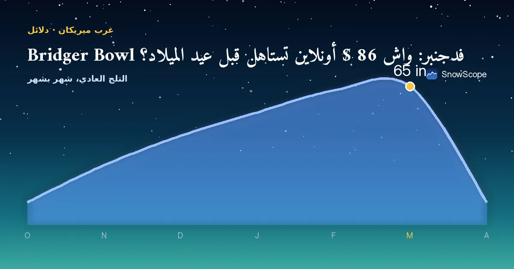

Bridger Bowl فدجنبر: واش 86 $ أونلاين تستاهل قبل عيد الميلاد؟
Bridger Bowl، المحطة اللاربحية قرب Bozeman، كتحط 86 دولار أونلاين للنهار الكامل—ما فيش زيادة فـ نهاية الأسبوع، ما فيش خدع. المشكلة فـ الوقت. الوسط ديال الجبل كيوصل لـ 20 سم (50 سم) فـ 15 ديسمبر فـ نص الشتوات اللي فاتو بـ فقط، لكن شيتاوة العيد كتجيب التلج الغادي فـ 78 % ديال السنوات.
شوف توقعات التلج مباشرة ديال Bridger Bowl فالتطبيق ديال SnowScopeالعلو ديال التلج، التنبيهات والخريطة 3D، فابور.
الجبل والبطاقة
Bridger كتجلس فـ سلسلة Bridger Range شمال Bozeman معا 12 تلفريك وتقريبا 26 كم (42 كم) ديال البيستات بين 6,120 قدم (1,865 م) و 8,060 قدم (2,457 م). الجهة الفوقانية فيها انحدار مهم؛ الجولات ديال التحت طويلة ورخيخة.
النهار الكامل كتكلف 86 دولار أونلاين أو 99 دولار فـ الكونتر للكبار من 19 لـ 69 سنة. البطاقة ديال بعد الزوال من 12:30 كتكلف 74 دولار. إذا كنت غادي تزور تلاتة أيام، أي يوم باك كتكلف 230 دولار لتلاتة أيام ما متتاليين بـ ما فيش أيام محجوزة.

أول ديسمبر: رقيق وما متساويش
التلج كيوصل بـ شي موثوق من منتصف أكتوبر فـ الوسط (7,090 قدم / 2,161 م)، لكن ديسمبر كيتبنى بـ ببطء. فـ 1 ديسمبر عادي، الوسط عندو 15 سم (37 سم). بـ 15 ديسمبر، هادا كيوصل لـ 20 سم (51 سم)—الحد ديال التزحلق الغادي—لكن فـ نص الشتوات اللي فاتو بـ فقط كوصلو لـ هادا العلو فـ ذاك التاريخ.
القاع، فـ 6,120 قدم (1,865 م)، أرق: 15 ديسمبر عادي كتعطي 12 سم (31 سم)، و 24 % بـ فقط ديال الشتوات كوصلو لـ 20 سم هناك. الفوق (8,060 قدم / 2,457 م) كتعاني بـ أحسن معا 29 سم (73 سم) فـ 15 ديسمبر فـ 78 % ديال الشتوات. التلج ديال أول الموسم متفرق، والجنان أو الأرض كيمكن تتفهم فـ المستويات التحتاني.

شيتاوة العيد: نقطة التحول
بـ يوم العيد، الوسط كيوصل لـ 22 سم (57 سم) عادي، و 72 % ديال الشتوات كتتجاوز 20 سم. الفوق كيوصل لـ 31 سم (79 سم) فـ 85 % ديال الشتوات. بـ 31 ديسمبر، الاحتمالات كتتقوى برا: الوسط كتتوسط 27 سم (69 سم) فـ 76 % ديال الشتوات، و الفوق 35 سم (88 سم) فـ 87 %.
فـ الأسبوع ديال 21–27 ديسمبر، 78 % ديال الشتوات اللي فاتو جابو التلج الغادي للوسط. هادا هو التحول من المخاطرة لـ الموثوقية. إذا كنت تقدر تستنى لـ نهاية ديسمبر، Bridger معا الأرض ديالها الحادة والأسعار الواضحة كتعاوضك على الصبر.
الشتوة هاذي شنو حالها
الشتوات اللي فاتو كتعطي تراجع تدريجي فـ التلج ديال ديسمبر. أول 15 شتوة فـ السجل ديالنا (1980–81 لـ 1994–95) كانو متوسط ديالهم 29 سم (73 سم) فـ الوسط فـ 15 ديسمبر، معا 67 % فوق 20 سم. آخر 15 شتوة (2011–12 لـ 2025–26) كانو متوسط ديالهم 19 سم (50 سم)، معا 47 %. الشتوة اللي فاتت كانت 18 سم (45 سم) فـ ذاك التاريخ، تحت النورم ديال الحين.
هادا التوجه كيعكس التغييرات الكبرا فـ المنطقة، ما Bridger بـ وحدها. الجبل باقي كيشوف التجمع الموثوق من يناير بـ فصاعد، كيتاين الحد الأقصى ديال الوسط فـ ذاك الوقت 56 سم (141 سم).
Bridger بالقياس ديال الجيران
Montana Snowbowl، لـ الغرب ديال Missoula، كتفرض 78 دولار فـ أيام الشغل و 85 دولار فـ نهاية الأسبوع. الوسط ديالها (6,260 قدم / 1,909 م) كتتوسط 30 سم (76 سم) فـ 15 ديسمبر فـ 83 % ديال الشتوات—رهان أقوى فـ أول الموسم. Snow King فـ Jackson كتفرض 100 دولار و كتتوسط 28 سم (71 سم) معا 87 % احتمالات.
لـ نهار رحلة من Bozeman فـ أول ديسمبر، Snowbowl كتسبق Bridger فـ العلو ديال التلج. لـ شيتاوة العيد بـ فصاعد، Bridger معا السعر ديالها 86 دولار أونلاين والأرض ديالها الخبيرة كتتغلب. الفرق بين 78 و 86 دولار أقل أهمية كيتاين الاحتمالات تتقفز من 50 % لـ 78 %.
شنو اللي كتجيب و شنو اللي كتتفقد
Bridger Canyon Road كتتجمد بـ بعد الصباحات ديال التلج الطري: جيب إطارات ثلج و تحسب فـ المرور البطيء. دير بدّاية مبكرة أو اقبل التأخير. الجبل فـ الفوق أرض حادة، خطيرة، كتحتاج معدّ الانهيارات، واحد الشريك ديالك، و توقعات ديال الانهيارات الحديثة—شد النشرة ديال الانهيارات ديال Gallatin National Forest قبل ما تروح بـ خارج الطريق.
نصايح للي كيتزلجو
- شري البطاقة ديالك أونلاين بـ 86 دولار، ما بـ الكونتر (99 دولار) أبدا. فـ نهار ديال القيادة، هادا الحفظ كيدفع واحد البيرة.
- تجنب المخاطرة: سيب 1–15 ديسمبر إذا ما كنت كتلاحق الفوق 8,060 قدم (2,457 م)، فـ حين 78 % ديال الشتوات عندهم التلج الغادي. دير الحساب لـ شيتاوة العيد بـ فصاعد بـ دال.
- استعمل أي يوم باك (230 دولار لتلاتة أيام) ديالك باش تقسم الزيارات على نهاية ديسمبر و يناير، كيتاين التلج أقوى و أكثر موثوقية.
- Bridger Canyon Road كتتجمد بـ بسهولة. طلّع مبكر، جيب إطارات ثلج، و ركّب الصبر فـ الطريق جاب البيت.
- الأرض ديال الفوق كتحتاج تكوين فـ الانهيارات و معدّ. استشور النشرة الرسمية ديال الانهيارات قبل ما تسيب المنطقة ديال التلفريك.
على هاد الأرقام
العلو ديال التلج فالمحطات هو أكثر تلج فالجهة الفوقانية فالتاريخ المكتوب؛ هادو تقديرات لمنطقة، ماشي قياس فنقطة وحدة. التوقعات يمكن تتبدل. ديما شوف النشرة الرسمية ديال الانهيارات قبل ما تخرج من البيست.
النشرات الرسمية ديال الانهيارات: Gallatin National Forest Avalanche Center
كيفاش تستاشهد بهاد المقال
للبحث، التعليم ولا الصحافة: الأرقام والرسومات تقدر تعاود تخدم بيهم بحرية تحت CC BY 4.0 مع هاد الاستشهاد.
SnowScope (2026), Bridger Bowl فدجنبر: واش 86 $ أونلاين تستاهل قبل عيد الميلاد؟, https://snowscope.app/blog/ar/2026/11/bridger-bowl-bozeman-december-ski-cost.html, تشاف ف 2026-11-15
SnowScope (Atlas Labs). (2026, November 15). Bridger Bowl فدجنبر: واش 86 $ أونلاين تستاهل قبل عيد الميلاد؟. SnowScope snow reports. https://snowscope.app/blog/ar/2026/11/bridger-bowl-bozeman-december-ski-cost.html
BibTeX
@misc{snowscope2026bridgerbowlbozemandecemb,
author = {{SnowScope (Atlas Labs)}},
title = {Bridger Bowl فدجنبر: واش 86 $ أونلاين تستاهل قبل عيد الميلاد؟},
year = {2026},
month = nov,
howpublished = {\url{https://snowscope.app/blog/ar/2026/11/bridger-bowl-bozeman-december-ski-cost.html}},
note = {Published 2026-11-15 09:34 UTC; accessed 2026-11-15}
}· CC BY 4.0 · الطريقة، الداتا والأدوات →
Bridger Bowl: التلج والحرارة حسب العلو، هاد الشتا مقارنة مع اللي فاتت (الأدوات) →
تابع Bridger Bowl
فابور: ميساج ملي يجي التلج، والتوقعات كل صباح.